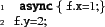
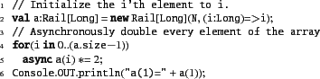
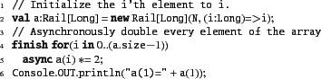
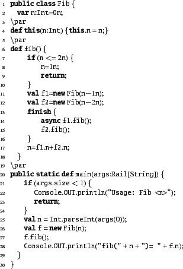
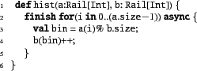
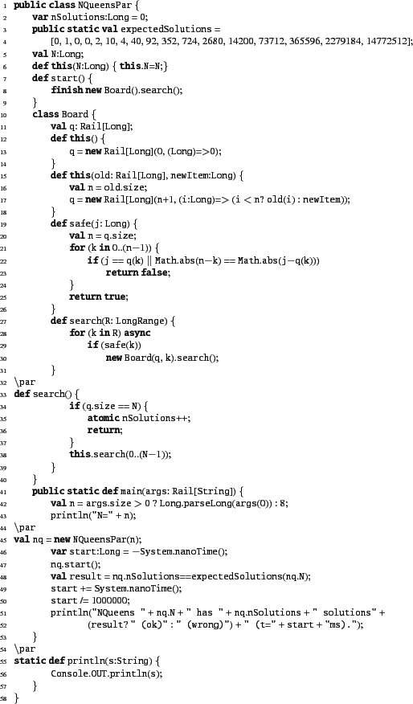
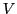
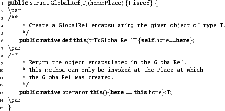

In this chapter, we cover the APGAS constructs in X10 v2.4.0.
Stmt ::= async Stmt
The execution of async S may be thought of as creating a new activity to execute S and returning immediately. The newly created activity runs in parallel with the current activity and has access to the same heap of objects as the current activity. Thus an X10 computation may have many concurrent activities ``in flight`` at the same time. Activities communicate with each other by reading and writing shared variables, e.g. fields of objects that both have access to.
An activity may be thought of as a very light-weight thread of execution. This means that the statement S may in fact contain just a few instructions, e.g. reading the value of a variable, performing some computation and then writing the value of a variable. There is no restriction on the statement S - it may contain any other construct (including other asyncs). In particular, activities may be long-running - indeed they may run for ever. In particular they make invoke recursive methods. Hence an activity is associated with its own control stack.
Activities (unlike threads in Java) are not named. There is no runtime
object corresponding to an activity that is visible to user
programs. This permits the implementation the freedom to actually not create a separate activity for each async at runtime as
long as the semantics of the language are not violated. For instance,
the compiler may decide to translate the program fragment:

to

This is called ``inlining'' an activity. It becomes much
harder for a compiler to inline if activities can have names - for,
to inline the activity the compiler will need to figure out that the
name is not used later.
Activities cannot be interrupted or aborted once they are in flight. They must proceed to completion.
In async S, the code in S is permitted to refer to immutable variables defined in the lexically enclosing scope. This is extremely convenient when writing code.
Using async we can specify that the elements of a rail should be doubled in parallel by:
![\begin{xtennum}[]
// Initialize the i'th element to i.
val a:Rail[Long] = new R...
...ry element of the array
for(i in 0..(a.size-1))
async a(i) *= 2;
\end{xtennum}](img30.png)
Consider now what happens if we attempt to read the value of a location:

Will it print out 1 or 2? We cannot say! The activity executing a(1) *= 2 may not have terminated by the time the current activity starts executing the print statement!
This is a fundamental problem. The programmer needs a mechanism for specifying ordering of computations. To this end we introduce the finish statement:
Stmt ::= finish Stmt
An activity executes finish S by executing S and then waiting until all activities spawned during the execution of S (transitively) terminate. Simple, but powerful!
To ensure proper termination of an X10 program, the main method is executed within a finish. Thus the program terminates only when the main method globally terminates. This property ensures that for every activity created during program execution there is a corresponding finish statement that will be notified of its termination. We say the activity tree is rooted.
We can now write our program as follows:
and be guaranteed that the output will be 2. Notice
that little needs to change in the program - we just add finish
and async at the right place!
Table 3.1 shows how the Fibonacci program can be written
in parallel. It uses an idiom that is of interest in many other
settings. The natural functional way to write fib is through a recursive function call:

The value is returned on the activity's stack. However, we
are interested in running fib in parallel, and hence we will
want a way by which multiple activities can invoke multiple fib
calls, each in their own stack. X10 does not permit the call stack
of one activity to be shared by another, or the code running during
the execution of an activity to read/write the local variables in a
stack frame of another activity.3.1
Table 3.1 presents a slightly more verbose Fibonacci program that makes explicit the interaction of activities through objects on the heap. A heap object is created for each recursive invocation of fib. The object has a single field which initially contains the input argument to the call, and on return contains the result of the call.
Note that the program illustrates that during execution finish and async may be scoped arbitrarily: the body of an async can contain finish statements, and the body of a finish can contain async statements. This interplay is at the heart of the expressiveness of the async/finish model.
X10 supports a rooted exception model. Any exception thrown inside an activity can be caught and handled within the activity by executing a try/catch statement. What happens if there is no try/catch?
The rooted model offers an answer. Since every activity has a governing finish, we let the exception propagate up from the activity to the governing finish. When executing a finish S statement, all exceptions thrown by activities spawned during the execution of S are accumulated at the finish statement. If at least one exception has been received at the finish statement, then it throws a MultipleExceptions exception with the set of exceptions as an argument. This ensures that no exception gets dropped on the floor (unlike Java).
Consider a parallel version of the Histogram program:

However, this program is incorrect! Why? Multiple activities executing b(bin)++ may interfere with each other! The operation d++ is not an atomic operation.
An atomic operation is an operation that is performed in a single step with respect to all other activities in the system (even though the operation itself might involve the execution of multiple statements). X10 provides the conditional atomic statement as a basic statement:
Stmt ::= when (c) Stmt
Here c is a condition, called the guard of the statement. An activity executes when (c) S atomically - in a single step - provided that the condition c is satisfied. Otherwise it blocks (waiting for the condition to be true).
The conditional atomic statement is an extremely powerful construct. It was introduced in the 1970s by Per Brinch Hansen and Tony Hoare under the name ``conditional critical region''. This is the only construct in X10 that permits one activity to block waiting for some other set of activities to establish some condition on shared variables.
This construct has an important special case. The statement atomic S is just shorthand for when (true) S.
Since the construct is so powerful, it is subject to several conditions for ease of implementation.
The Histogram problem can now be solved correctly:

A parallel N-Queens program is given in Table 3.2
First, consider you are writing a program to deal with enormous amounts of data - say terabytes of data, i.e. thousands of gigabytes. Now you may not have enough main memory on a single node to store all this data - a single node will typically have tens of gigabytes of main storage. So therefore you will need to run your computation on a cluster of nodes: a collection of nodes connected to each other through some (possibly high-speed) interconnect. That is, your single computation will actually involve the execution of several operating system level processes, one on each node. Unfortunately, acccessing a memory location across a network is typically orders of magnitude slower (i.e. has higher latency) than accessing it from a register on the local core. Further, the rate at which data can be transferred to local memory (bandwidth) is orders of magnitude higher than the rate at which it can be transferred to memory across the cluster.
As with implicit parallelism, one could try to write extremely clever compilers and runtimes that try to deal with this memory wall implicitly. Indeed, this is the idea behind distributed shared memory (DSM). The entire memory of a collection of processes is presented to the programmer as a single shared heap. Any activity can read and write any location in shared memory. However, there are no efficient implementations of DSM available today. The primary conceptual issue is that the programmer has lost control over decisions that can have orders of magnitude impact on performance of their code. When looking at a single assignment statement a.f=e, the programmer has no way of knowing whether this is going to take dozens of cycles or millions of cycles.
A second primary motivation arises from heterogeneity. Computer architects are looking to boost computational power by designing different kinds of specialized cores, each very good at particular kinds of computations. In general, these accelerators interact with the main processor at arm's length.
Two primary cases in point are the Toshiba-Sony-IBM Cell Broadband Engine (``Cell processor'' for short), and general-purpose graphical processing engines (GPGPUs for short), from vendors such as NVidia and AMD. These provide an enormous boost in computational power for particular kinds of regular loops at the cost of introducing specialized hardware.
For instance, the Cell provides eight specialized processors (SPEs) on a single chip, connected to each other through a high-speed (on-chip) bus. These processors may execute many instructions in parallel (they have ``single instruction multiple data'', SIMD, instructions). However, data needs to be explicitly transfered from main memory to a local cache on each SPE, operated upon, and then transfered back.
The third motivation is similar to the second, but involves only homogeneous cores. Multiple cores may share precious resources, such as L1 and L2 cache. To improve performance, it may make sense to bind activities to particular cores, in particular to force certain groups of activities to work on the same cores so that they can amortize the cost of cache misses (because they are operating on the same data). Or it may make sense to bind them to different cores that do not share an L2 cache so that the execution of one does not pollute the cache lines of the other.
A place in X10 is a collection of data and activities that operate on that data. A program is run on a fixed number of places. The binding of places to hardware resources (e.g. nodes in a cluster, accelerators) is provided externally by a configuration file, independent of the program.
Programs are typically written to operate on any number of places. The number of places in a particular run of the program can be queried through Place.MAX_PLACES.
In X10 v2.4.0 all places are uniform. In future versions of the language we will support heterogeneity by permitting different kinds of places, with the ability to check the attributes of a place statically, and hence write code that depends on the kind of place it is running on.
The primary construct for exposing places to the programmer is:
Stmt ::= at (p) Stmt
An activity executing at (p) S suspends execution in the current place. The object graph  at the current place whose roots are all the variables used in S is serialized, and transmitted to place p, deserialized (creating a graph  isomorphic to ), an environment is created with the variables bound to the corresponding roots in , and S executed at p in this environment. On local termination of S, computation resumes after at (p) S in the original location. The object graph is not automatically transferred back to the originating place when S terminates: any updates made to objects copied by an at will not be reflected in the original object graph.
The at statement is a reminder to the programmer that at this point communication may potentially happen across the network. Therefore the programmer should be aware of what values will be transmitted from the source to the destination place and also be aware that any mutations to objects during the execution of S will only be visible at p
Because of this ability to shift the current place, at is said to be a place-shifting operation. It is the only control construct related to places in X10.
The indexical constant here can be used to determine the current place.
It is also possible to use at as an expression to do a computation and return a value to the originating place.
Expr ::= at (p) { S; E }
Expr ::= at (p) E
In this variant of at, the value of E is serialized from
p back to the originating place and used as the value of the
at expression.
Of course the abstraction of a partitioned global address space without some means of actually referring to objects in a different partition would not be of much use. Therefore the X10 standard library provides the GlobalRef struct in the x10.lang package. Using GlobalRef, the programmer can easily create cross-place references by capturing a GlobalRef within an at statement.
The core API of GlobalRef is shown below. It has two operations:
a constructor to create a GlobalRef to encapsulate an object and
a method to access the encapsulated object, which is constrained via a
method guard to only be applicable at the home Place of the
GlobalRef.

To access the encapsulated object, the programmer uses at to
place-shift to the ref's home:
In X10 , the programmer must explicitly place-shift using at
to access an object that lives in another Place. Requiring an
explicit at is a design choice that was made to highlight for
the programmer that at this point communication may potentially happen
across the network.
Table 3.3 shows some additional operations defined on the GlobalRef struct. These functions encapsulate more efficient implemenetations of common idiomatic usages of GlobalRef.